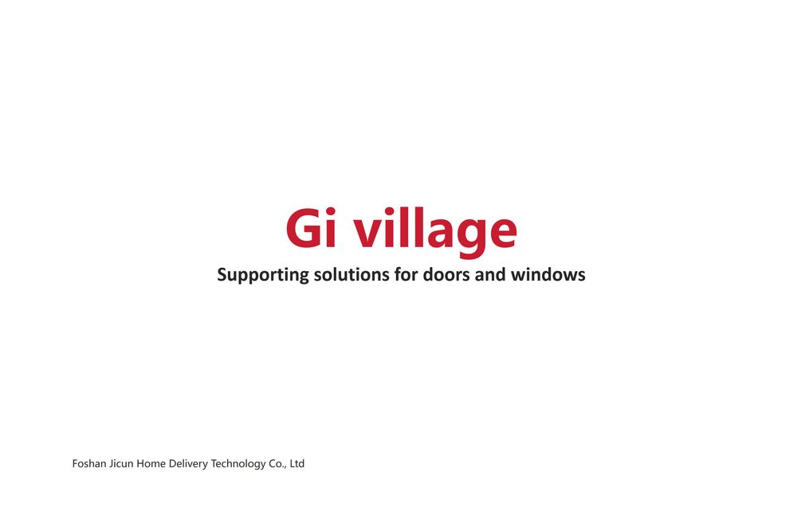

Supporting solutions for doors and windows — engineered as one coordinated system.
Based in Foshan, Guangdong — the heart of China's aluminium industry — Gi Village designs and manufactures a complete family of window and door surround profiles: external and internal sills, window covers, copings, drip lines, glass balustrades and minimalist canopies.
Every profile is engineered to work as part of a system, so water is shed, edges stay sealed and the façade keeps its clean line for decades. Products are finished with durable TIGER coatings in architectural Black, Grey, White and Coffee.

No. 2, Langxia Industrial Zone, Langxia Village, Shishan Town, Nanhai District, Foshan City, Guangdong Province, China